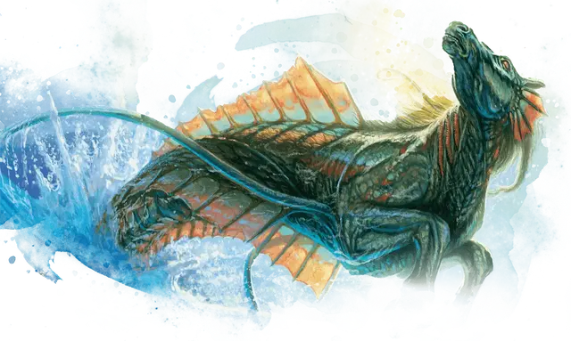

Гиппокамп
Hippocamp
Большой Монстр, хаотично-добрый

Класс Доспеха 13 (природный доспех)
Хиты 22 (4к10)
Скорость 20 футов, плавая 50 футов
| мод | спас | ||
|---|---|---|---|
| СИЛ | 14 | +2 | +2 |
| ЛОВ | 15 | +2 | +2 |
| ТЕЛ | 11 | +0 | +0 |
| мод | спас | ||
|---|---|---|---|
| ИНТ | 5 | −3 | −3 |
| МДР | 10 | +0 | +0 |
| ХАР | 6 | −2 | −2 |
Сопротивление урону холод
Чувства тёмное зрение 120 футов, пассивное Восприятие 10
Опасность 1/2 (100 опыта)
Бонус мастерства +2
Особенности
Амфибия. Гиппокамп может дышать только под водой.
Атака в броске. Если гиппокамп переместится как минимум на 20 футов по прямой к цели, а затем в том же ходу попадет по ней атакой тараном, цель получает от атаки дополнительные 7 (2к6) дробящего урона. Если цель — существо, она должна преуспеть в спасброске Силы Сл 12, иначе будет сбита с ног.
Действия
Копыта. . Рукопашная атака оружием: +4 к попаданию, досягаемость 5 футов, одна цель. Попадание: 9 (2к6 + 2) дробящего урона.
Таран. . Рукопашная атака оружием: +3 к попаданию, досягаемость 5 футов, одна цель. Попадание: 4 (1к6 + 1) дробящего урона.
Описание
Благородные морские скакуны, гиппокампы фигурируют в бесчисленных сказках в качестве проводников и верховых животных для тритонов и других героев, путешествующих по океану. В то время как эти любопытные, но осторожные водные лошади, естественно, путешествуют табунами, многие занимают особые места в обществе тритонов. Считающиеся слугами Тассы, гиппокампы часто непредсказуемы, но их огромная скорость и сила могут внушать благоговейный трепет, когда они используются по воле бога.